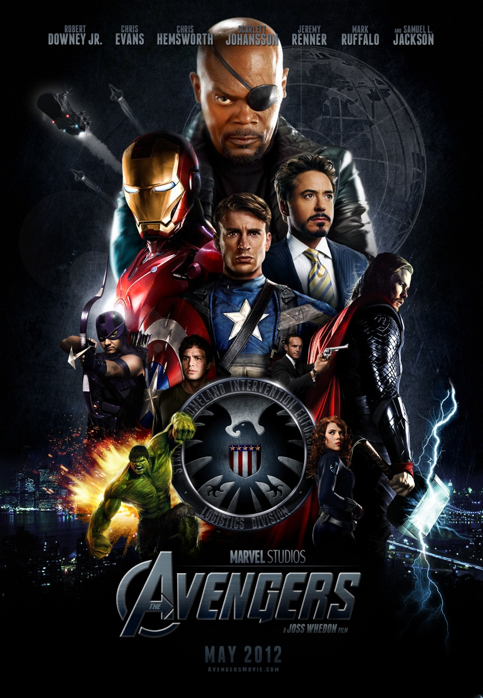

Welcome to SuperSevenStudio
SuperSevenStudio Photo – Video Production is a family business with a team of Professional Photographers, Videographers and support staff dedicated to serve our clients by producing the highest quality photographic images and videos possible. On our hands are state of the art technology and highest quality equipment. Our studio is located in Bohol, a first class island province of the Philippines. Areas of our photographic expertise include Weddings, Engagements and Debut Celebrations.
We get to know our clients and meet with you before your production session or wedding day so we become a good fit for one another. Our style is distinctive, natural, and spur out of the moment, capturing those special moments of bliss and delight on your wedding day or your child's giggle during a portrait production. Many photographers apply the same methodology to every project - and their images stare it. Not
SuperSevenStudio Photo – Video Production.
Read more...
Current
and
Upcoming
Event Projects
The Bachelorette
Bachelorette is a 2012 American comedy-drama film written and directed by Leslye Headland, and produced by Will Ferrell and Adam McKay. The film wrapped production in New York.[5] Bachelorette premiered at the Sundance Film Festival on January 23, 2012.[2] The film will be released in the United States on September 7, 2012.
September 3, 2012 - Prometheus
A team of explorers discover a clue to the origins of mankind on Earth, leading them on a journey to the darkest corners of the universe. There, they must fight a terrifying battle to save the future of the human race.
September 5, 2012 - The Avengers
The Asgardian Loki encounters the Other, the leader of an extraterrestrial race known as the Chitauri. In exchange for retrieving the Tesseract,2 a powerful energy source of unknown potential, the Other promises Loki a Chitauri army with which he can subjugate the Earth. Nick Fury, director of the espionage agency S.H.I.E.L.D., and his lieutenant Agent Maria Hill arrive at a remote research facility during an evacuation, where physicist Dr. Erik Selvig is leading a research team experimenting on the Tesseract. Agent Phil Coulson explains that the object has begun radiating an unusual form of energy. The Tesseract suddenly activates and opens a portal, allowing Loki to reach Earth. Loki takes the Tesseract and uses his scepter to enslave Selvig and several agents, including Clint Barton, to aid him in his getaway.
